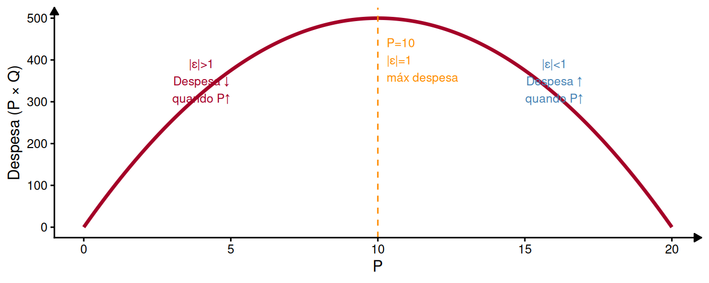
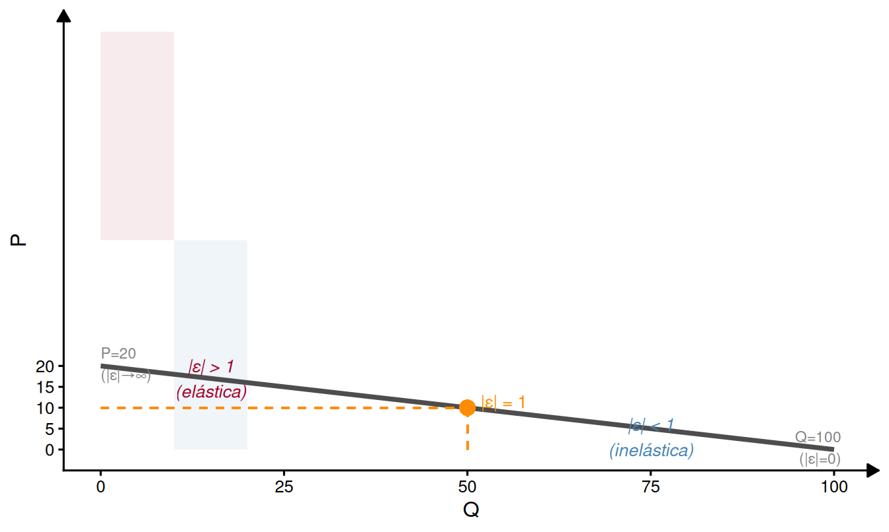
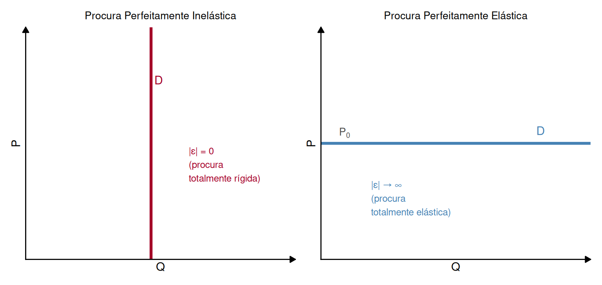

Microeconomia
Elasticidades da Procura
ISCAL - IPL
O Conceito de Elasticidade
O que mede a elasticidade?
Elasticidade
A elasticidade mede a variação percentual de uma variável em resposta à variação percentual de outra variável que a influencia.
Por ser uma razão de percentagens, a elasticidade é adimensional — não depende das unidades de medida.
Forma geral: \[\varepsilon_{Y,X} = \frac{\Delta\% Y}{\Delta\% X} = \frac{\dfrac{\Delta Y}{Y}}{\dfrac{\Delta X}{X}} = \frac{\Delta Y}{\Delta X} \cdot \frac{X}{Y}\]
Em termos contínuos (derivada): \[\varepsilon_{Y,X} = \frac{dY}{dX} \cdot \frac{X}{Y}\]
Elasticidades da Procura
Vamos estudar três elasticidades da procura:
1. Elasticidade preço-direta \((\varepsilon_D)\)
Sensibilidade da quantidade procurada de \(X\) face ao preço de \(X\).
2. Elasticidade preço cruzada \((\varepsilon_{x,y})\)
Sensibilidade da quantidade procurada de \(X\) face ao preço de outro bem \(Y\).
3. Elasticidade rendimento \((\eta)\)
Sensibilidade da quantidade procurada de \(X\) face ao rendimento disponível.
Elasticidade Preço-Direta da Procura
Definição e Fórmula
Elasticidade Preço-Direta
Mede a variação percentual da quantidade procurada quando o preço do mesmo bem varia 1%, tudo o resto constante: \[\varepsilon_D = \frac{\Delta\% Q_D}{\Delta\% P} = \frac{\Delta Q_D}{\Delta P} \cdot \frac{P}{Q_D}\]
Como \(Q_D\) e \(P\) variam em sentidos opostos (Lei da Procura), \(\varepsilon_D < 0\) em geral.
Trabalha-se habitualmente com o valor absoluto \(|\varepsilon_D|\):
| \(|\varepsilon_D|\) | Classificação |
|---|---|
| \(> 1\) | Procura elástica |
| \(= 1\) | Elasticidade unitária |
| \(< 1\) | Procura inelástica (ou rígida) |
Cálculo: Procura Linear
Para \(Q_D = a - bP\):
\[\frac{dQ_D}{dP} = -b \quad \Rightarrow \quad \varepsilon_D = -b \cdot \frac{P}{Q_D}\]
Nota importante
Numa procura linear, \(|\varepsilon_D|\) varia ao longo da curva — não é constante. O mesmo \(b\) produz elasticidades diferentes conforme o ponto \((P, Q_D)\) considerado.
Exemplo: \(Q_D = 100 - 5P\)

- Zona superior (preços altos, quantidades baixas): procura elástica
- Ponto médio (\(P=10\), \(Q=50\)): elasticidade unitária
- Zona inferior (preços baixos, quantidades altas): procura inelástica
Casos Extremos

- \(|\varepsilon|=0\): quantidade não reage ao preço (ex.: medicação sem substitutos, bem de sobrevivência)
- \(|\varepsilon|\to\infty\): consumidores só compram a \(P_0\) — qualquer aumento de preço leva a procura a zero (ex.: bem homogéneo com substituto perfeito)
Fatores que Influenciam \(|\varepsilon_D|\)
- Existência de substitutos: mais substitutos → maior elasticidade. Leite (poucos substitutos) vs. leite de marca \(X\) (muitos substitutos).
- Especificidade da definição do bem: quanto mais específico, maior \(|\varepsilon_D|\). “Comida” (inelástica) vs. “Pizza Margherita da Telepizza” (elástica).
- Peso no orçamento: bens com maior peso no orçamento têm procuras mais elásticas — o consumidor está mais atento às variações de preço.
- Período de tempo: no longo prazo, o consumidor tem mais tempo para adaptar comportamentos e encontrar substitutos → elasticidade aumenta com o tempo.
Elasticidade e Despesa de Consumo
A variação da despesa total (\(P \times Q_D\)) quando o preço sobe depende de \(|\varepsilon_D|\):
\[\Delta \text{Despesa} \approx \underbrace{P_0 \cdot \Delta Q}_{\text{efeito quantidade}} + \underbrace{\Delta P \cdot Q_0}_{\text{efeito preço}}\]
- Se \(|\varepsilon_D| > 1\): efeito quantidade domina → despesa desce quando \(P\) sobe
- Se \(|\varepsilon_D| < 1\): efeito preço domina → despesa sobe quando \(P\) sobe
- Se \(|\varepsilon_D| = 1\): os dois efeitos compensam-se → despesa não se altera
Elasticidade Preço Cruzada
Definição
Elasticidade Preço Cruzada
Mede a variação percentual da quantidade procurada do bem \(X\) quando o preço do bem \(Y\) varia 1%, tudo o resto constante: \[\varepsilon_{x,y} = \frac{\Delta\% Q_x}{\Delta\% P_y} = \frac{\Delta Q_x}{\Delta P_y} \cdot \frac{P_y}{Q_x}\]
O sinal de \(\varepsilon_{x,y}\) identifica a relação entre os bens:
| Sinal | Relação | Interpretação |
|---|---|---|
| \(\varepsilon_{x,y} > 0\) | Bens substitutos | \(P_y \uparrow\) → procura de \(X\) sobe |
| \(\varepsilon_{x,y} < 0\) | Bens complementares | \(P_y \uparrow\) → procura de \(X\) desce |
| \(\varepsilon_{x,y} = 0\) | Bens independentes | preço de \(Y\) não afeta procura de \(X\) |
Exemplo: Bens Substitutos e Complementares
Substitutos — café e chá: se o preço do chá sobe, a procura de café sobe
Complementares — café e açúcar: se o preço do açúcar sobe, o café fica mais caro de consumir → procura de café desce
Aplicação à Definição de Mercado
A elasticidade cruzada é usada para determinar se dois bens pertencem ao mesmo mercado relevante. Quanto maior \(\varepsilon_{x,y}\), mais próximos os substitutos — iogurtes de diferentes marcas têm \(\varepsilon_{x,y}\) elevada; iogurtes e ervilhas têm \(\varepsilon_{x,y} \approx 0\).
Elasticidade Rendimento
Definição
Elasticidade Rendimento
Mede a variação percentual da quantidade procurada quando o rendimento disponível (\(W\)) varia 1%, tudo o resto constante: \[\eta = \frac{\Delta\% Q}{\Delta\% W} = \frac{\Delta Q}{\Delta W} \cdot \frac{W}{Q}\]
O sinal e magnitude de \(\eta\) classificam o tipo de bem:
| \(\eta\) | Tipo de bem |
|---|---|
| \(\eta < 0\) | Bem inferior (procura desce quando rendimento sobe) |
| \(0 < \eta \leq 1\) | Bem normal (procura sobe com rendimento, não mais do que proporcionalmente) |
| \(\eta > 1\) | Bem de luxo (procura sobe mais do que proporcionalmente) |
Intuição Económica
- Bem inferior (\(\eta < 0\)): quando o rendimento sobe, o consumidor substitui este bem por alternativas melhores. Ex.: transporte em autocarro, marcas de distribuidor baratas.
- Bem normal (\(0 < \eta \leq 1\)): procura sobe com rendimento, mas de forma menos do que proporcional. Ex.: alimentação básica, roupa corrente.
- Bem de luxo (\(\eta > 1\)): procura responde de forma mais que proporcional ao rendimento. Ex.: viagens de férias, automóveis de alta gama, jantares em restaurantes de topo.
Quadro Resumo
Elasticidades da Procura: Síntese
| Elasticidade | Valor | Conclusão |
|---|---|---|
| \(\|\varepsilon_D\|\) | \(> 1\) | Procura elástica |
| \(= 1\) | Elasticidade unitária | |
| \(< 1\) | Procura inelástica | |
| \(\varepsilon_{x,y}\) | \(> 0\) | Bens substitutos |
| \(= 0\) | Bens independentes | |
| \(< 0\) | Bens complementares | |
| \(\eta\) | \(< 0\) | Bem inferior |
| \(0 < \eta \leq 1\) | Bem normal | |
| \(> 1\) | Bem de luxo |
Exercícios
Exercício 1 — Escolha Múltipla
A procura de mercado de um bem é \(Q_D = 120 - 3P\). Qual é a elasticidade preço-direta quando \(P = 30\)?
\(\varepsilon_D = -1\) (elasticidade unitária)
\(\varepsilon_D = -3\) (elástica)
\(\varepsilon_D = -1/3\) (inelástica)
\(\varepsilon_D = -1/2\) (inelástica)
Exercício 1 — Solução
Resolução:
\[\frac{dQ_D}{dP} = -3\]
Quando \(P = 30\): \(\quad Q_D = 120 - 3 \times 30 = 30\)
\[\varepsilon_D = \frac{dQ_D}{dP} \cdot \frac{P}{Q_D} = -3 \times \frac{30}{30} = \mathbf{-3}\]
\(|\varepsilon_D| = 3 > 1\) → procura elástica neste ponto.
Se o preço subir 1%, a quantidade procurada reduz-se 3%.
Resposta: B)
Exercício 2 — Escolha Múltipla
A quantidade procurada do bem \(X\) é dada por \(Q_x = 80 - 3P_x - 2P_y\). Sabendo que \(P_x = 5\) e \(P_y = 6\), qual a relação entre \(X\) e \(Y\)?
Bens substitutos, pois \(\varepsilon_{x,y} > 0\)
Bens complementares, pois \(\varepsilon_{x,y} < 0\)
Bens independentes, pois \(\varepsilon_{x,y} = 0\)
Não é possível determinar sem conhecer o rendimento
Exercício 2 — Solução
Resolução:
\[\frac{\partial Q_x}{\partial P_y} = -2\]
Quando \(P_x = 5\), \(P_y = 6\): \[Q_x = 80 - 3(5) - 2(6) = 80 - 15 - 12 = 53\]
\[\varepsilon_{x,y} = \frac{\partial Q_x}{\partial P_y} \cdot \frac{P_y}{Q_x} = -2 \times \frac{6}{53} \approx -0{,}23\]
\(\varepsilon_{x,y} < 0\) → bens complementares: quando o preço de \(Y\) sobe, a quantidade procurada de \(X\) diminui.
Resposta: B)
Exercício 3 — Desenvolvimento
A procura de um bem é \(Q_D = 120 - 3P\).
(a) Calcule \(\varepsilon_D\) quando \(P = 10\), \(P = 20\) e \(P = 30\). Classifique em cada caso.
(b) Para que valor de \(P\) a elasticidade é unitária?
(c) Calcule o Excedente do Consumidor para \(P = 10\) e para \(P = 20\). Comente a relação com a elasticidade.
Exercício 3 — Resolução (a) e (b)
Alínea (a): \(\dfrac{dQ_D}{dP} = -3\)
| \(P\) | \(Q_D\) | \(\varepsilon_D = -3 \cdot \frac{P}{Q_D}\) | Classificação |
|---|---|---|---|
| 10 | 90 | \(-3 \times \frac{10}{90} = -\frac{1}{3}\) | Inelástica |
| 20 | 60 | \(-3 \times \frac{20}{60} = -1\) | Unitária |
| 30 | 30 | \(-3 \times \frac{30}{30} = -3\) | Elástica |
Alínea (b): \(|\varepsilon_D| = 1 \Leftrightarrow \left|-3 \cdot \frac{P}{120-3P}\right| = 1\)
\[3P = 120 - 3P \quad \Rightarrow \quad 6P = 120 \quad \Rightarrow \quad \mathbf{P = 20}\]
Exercício 3 — Resolução (c)
Alínea (c): Inversa da procura: \(P = 40 - \dfrac{Q}{3}\) (preço máximo = 40 quando \(Q=0\))
EC quando \(P = 10\) (\(Q = 90\)): \[EC = \frac{(40 - 10) \times 90}{2} = \frac{30 \times 90}{2} = \mathbf{1{.}350}\]
EC quando \(P = 20\) (\(Q = 60\)): \[EC = \frac{(40 - 20) \times 60}{2} = \frac{20 \times 60}{2} = \mathbf{600}\]
Comentário
A \(P = 10\) a procura é inelástica — os consumidores estão dispostos a pagar muito acima do preço de mercado, gerando um EC elevado (1.350). A \(P = 20\) a procura é unitária e o EC é mais reduzido (600). A zona inelástica da procura coincide com onde os consumidores têm menos alternativas e maior disponibilidade a pagar.
Síntese
Resumo da Aula
Elasticidade preço-direta \((\varepsilon_D)\):
- Fórmula: \(\varepsilon_D = \dfrac{dQ_D}{dP} \cdot \dfrac{P}{Q_D}\); sempre \(\leq 0\)
- Numa procura linear, varia ao longo da curva: elástica em cima, inelástica em baixo
- \(|\varepsilon_D| > 1\): despesa desce quando \(P\) sobe; \(|\varepsilon_D| < 1\): despesa sobe
Elasticidade cruzada \((\varepsilon_{x,y})\):
- Positiva → substitutos; negativa → complementares; nula → independentes
Elasticidade rendimento \((\eta)\):
- \(\eta < 0\): bem inferior; \(0 < \eta \leq 1\): normal; \(\eta > 1\): luxo
Para a próxima aula
Na aula 24 estudaremos a elasticidade preço da oferta e a sua relação com o horizonte temporal de produção.

Microeconomia (Plano de Transição)